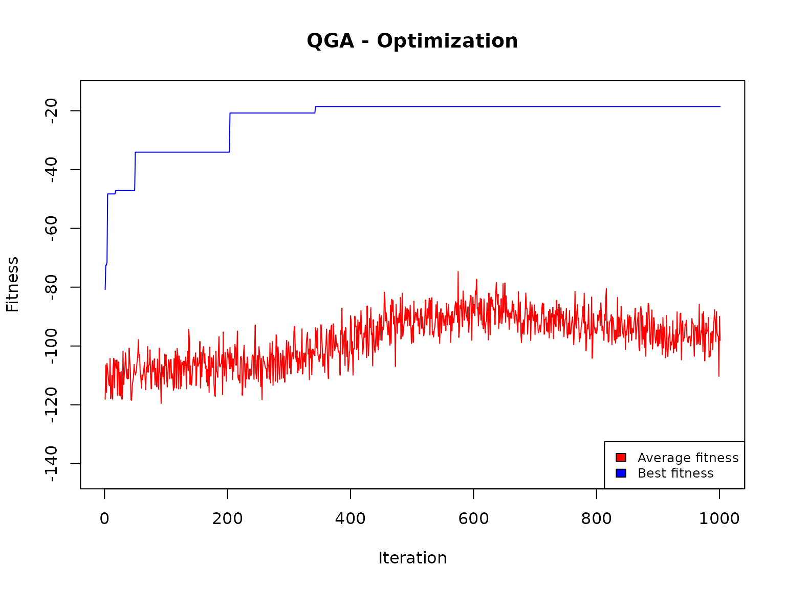
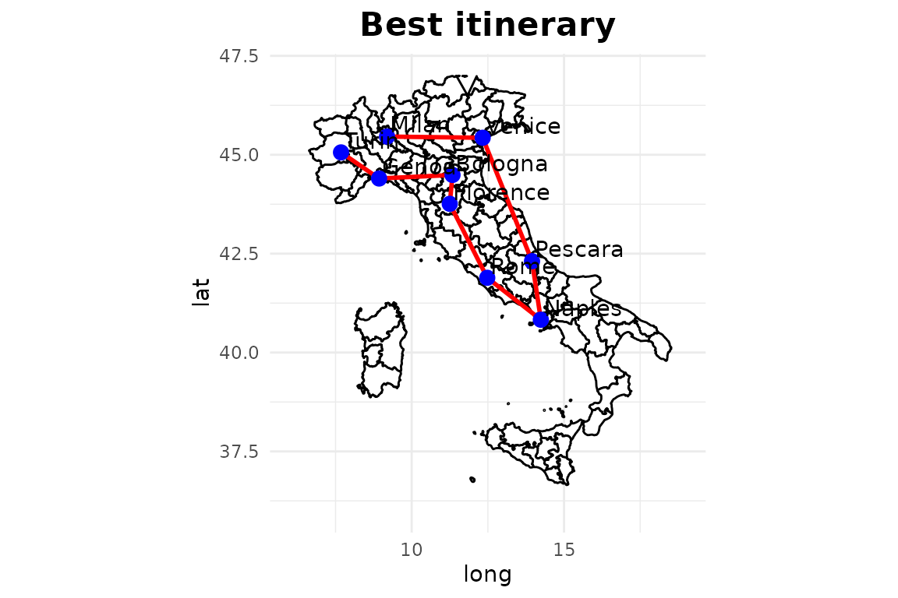

“The travelling salesperson problem, also known as travelling salesman problem, asks the following question:”Given a list of cities and the distances between each pair of cities, what is the shortest possible route that visits each city exactly once and returns to the origin city?” It is an NP-hard problem in combinatorial optimization, important in theoretical computer science and operations research.” (from Wikipedia).
The following fitness evaluation function is defined:
TravellingSalesman <- function(solution,distance) {
l = 0.0
for (i in 2:length(solution)) {
l = l+distance[solution[i-1], solution[i]]
}
# Fitness function
l = l + distance[solution[1],solution[length(solution)]]
# Penalization
penal <- ((nrow(distance)) - length(table(solution)))*sum(distance)/10
cost <- -(penal+l)
return(cost)
}This function receives as input parameters:
An external file with a list of cities (names and coordinates) is read, and a number of them is selected (here, only 9):
cities <- read.csv("TSP_cities.csv")
ncities <- 9
cities <- cities[c(1:ncities),]
cities
#> city x y
#> 1 Turin 7.68 45.06
#> 2 Milan 9.19 45.46
#> 3 Genoa 8.93 44.40
#> 4 Venice 12.33 45.43
#> 5 Bologna 11.34 44.49
#> 6 Florence 11.25 43.76
#> 7 Pescara 13.95 42.31
#> 8 Rome 12.48 41.89
#> 9 Naples 14.24 40.83
distance <- as.matrix(dist(cities[,c(2:3)]))
distance
#> 1 2 3 4 5 6 7 8 9
#> 1 0.000000 1.562082 1.413542 4.664697 3.704119 3.799329 6.846561 5.752295 7.805543
#> 2 1.562082 0.000000 1.091421 3.140143 2.358686 2.670880 5.707898 4.854791 6.851233
#> 3 1.413542 1.091421 0.000000 3.552591 2.411680 2.406657 5.437693 4.347712 6.398515
#> 4 4.664697 3.140143 3.552591 0.000000 1.365174 1.988794 3.515508 3.543177 4.980773
#> 5 3.704119 2.358686 2.411680 1.365174 0.000000 0.735527 3.400662 2.838943 4.669647
#> 6 3.799329 2.670880 2.406657 1.988794 0.735527 0.000000 3.064719 2.238258 4.186287
#> 7 6.846561 5.707898 5.437693 3.515508 3.400662 3.064719 0.000000 1.528823 1.508145
#> 8 5.752295 4.854791 4.347712 3.543177 2.838943 2.238258 1.528823 0.000000 2.054556
#> 9 7.805543 6.851233 6.398515 4.980773 4.669647 4.186287 1.508145 2.054556 0.000000Here, the distances have been calculated simply as Euclidean distances: clearly, in more realistic cases they should be calculated based on a road map.
We define the Genome parameter as the number of cities; also the number of values is set equal to the number of cities. This means that each solution is a vector of 9 elements, each one with an assigned value from 1 to 9: each couple element/value indicates from which origin city (element) the travelling salesman should go to which destination city (value). In this setting, we do not want to introduce the mutation operator. Moreover, we want to iterate 1000 times, each time considering 20 generated solutions.
popsize = 20
Genome = nrow(cities)
nvalues_sol = nrow(cities)
set.seed(4321)
TSPsolution <- QGA(popsize,
generation_max = 1000,
nvalues_sol,
Genome,
thetainit = 3.1415926535 * 0.01,
thetaend = 3.1415926535 * 0.01,
# pop_mutation_rate_init = 1/(popsize + 1),
# pop_mutation_rate_end = 1/(popsize + 1),
# mutation_rate_init = 1/(Genome + 1),
# mutation_rate_end = 1/(Genome + 1),
mutation_flag = FALSE,
plotting = FALSE,
verbose = FALSE,
progress = FALSE,
eval_fitness = TravellingSalesman,
eval_func_inputs = distance)
QGA:::plot_Output(TSPsolution[[2]])
The plot indicates that the number of iterations was enough to obtain a solution that is likely to be no further improved.
solution <- TSPsolution[[1]]
cities$city[solution]
#> [1] "Milan" "Venice" "Pescara" "Naples" "Rome" "Florence" "Bologna" "Genoa" "Turin"
cities_tsp <- cities[solution,]
# plot(y~x,data=cities_tsp)
# polygon(cities_tsp$x,cities_tsp$y,border="red")
# text(x = cities_tsp$x, y = cities_tsp$y, labels = cities_tsp$city, cex=.75)
# title("Best path")
# Plot
if (!require(maps)) install.packages("maps")
#> Loading required package: maps
if (!require(tidyverse)) install.packages("tidyverse")
#> Loading required package: tidyverse
#> ── Attaching core tidyverse packages ─────────────────────────────────────────────────────────────────────────────────────────────────────────────────────────────────────────────────────────────────────────────────────────────────────────────────────────────────────────────────────────────────────────────────────────────────────────────────────────────────────────────────────────────────────────────────────────────────────────────────────────────────────────────────────────────────────────────────────────────────────────────────────────────────────────────────────────────────────────────────────────────────────────────────────────────────────────────────────────────────────────────────────────────────────────────────────────────────────────────────────────────────────────────────────────────────────────────────────────────────────────────────────────────────────────────────────────────────────────────────────────────────────────────────────────────────────────────── tidyverse 2.0.0 ──
#> ✔ dplyr 1.1.4 ✔ readr 2.1.5
#> ✔ forcats 1.0.0 ✔ stringr 1.5.1
#> ✔ ggplot2 3.5.1 ✔ tibble 3.2.1
#> ✔ lubridate 1.9.3 ✔ tidyr 1.3.1
#> ✔ purrr 1.0.2
#> ── Conflicts ───────────────────────────────────────────────────────────────────────────────────────────────────────────────────────────────────────────────────────────────────────────────────────────────────────────────────────────────────────────────────────────────────────────────────────────────────────────────────────────────────────────────────────────────────────────────────────────────────────────────────────────────────────────────────────────────────────────────────────────────────────────────────────────────────────────────────────────────────────────────────────────────────────────────────────────────────────────────────────────────────────────────────────────────────────────────────────────────────────────────────────────────────────────────────────────────────────────────────────────────────────────────────────────────────────────────────────────────────────────────────────────────────────────────────────────────────────────────────────────────── tidyverse_conflicts() ──
#> ✖ dplyr::filter() masks stats::filter()
#> ✖ dplyr::lag() masks stats::lag()
#> ✖ purrr::map() masks maps::map()
#> ℹ Use the conflicted package (<http://conflicted.r-lib.org/>) to force all conflicts to become errors
if (!require(ggplot2)) install.packages("ggplot2")
library(maps)
library(tidyverse)
library(ggplot2)
italy_map <- map_data("italy")
lines <- data.frame(
x = cities_tsp$x[-nrow(cities_tsp)],
y = cities_tsp$y[-nrow(cities_tsp)],
xend = cities_tsp$x[-1],
yend = cities_tsp$y[-1]
)
gg <- ggplot() +
geom_polygon(data = italy_map, aes(x = long, y = lat, group = group),
fill = "white", color = "black") +
geom_segment(data = lines, aes(x = x, y = y, xend = xend, yend = yend),
color = "red", size = 1) +
geom_point(data = cities_tsp, aes(x = x, y = y), color = "blue", size = 3) +
geom_text(data = cities_tsp, aes(x = x, y = y, label = city),
hjust = 0, vjust = 0, nudge_x = 0.1, nudge_y = 0.1) +
coord_fixed(1.3) +
theme_minimal() +
ggtitle("Best itinerary") +
theme(plot.title = element_text(hjust = 0.5, size = 16, face = "bold")) +
xlim(6, 19) + ylim(36, 47)
#> Warning: Using `size` aesthetic for lines was deprecated in ggplot2 3.4.0.
#> ℹ Please use `linewidth` instead.
#> This warning is displayed once every 8 hours.
#> Call `lifecycle::last_lifecycle_warnings()` to see where this warning was generated.
print(gg)
This seems to be a reasonable solution, but it has to be noted that, with a higher number of cities, it becomes more and more difficult to find acceptable solutions. For instance, with 10 cities the algorithm gives unreasonable solutions. This depends on the fact that the efficiency of the quantum GA decreases with the number of the possible values given to each element of the genome (parameter n_val_sol). In that case, traditional genetic algorithms (GA, genalg, etc) can be more efficient.